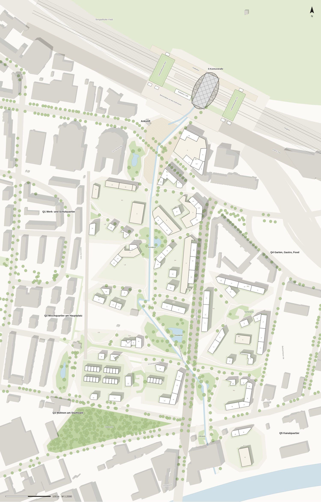
Jedes Baufeld hat eine geschlossene Seite zur Komturstraße, zu den Plätzen und zum Bahnhof. Dahinter wird es kleiner: Gewerbehof, Kamm, Reihenhaus, Gartenhof, Punkthaus, je Quartier eine Typologie. Eine Grünachse sammelt das Regenwasser vom Bahnhofsdach bis zum Teltowkanal.
Dichte ähnlich Prinz-Eugen-Park (ca. 60 WE/ha brutto; hier 51). Zahlen aus dem Rechenmodell, Stand 28.11.2026; EG 4,2 m, OG 3,1 m, 88 m² BGF je Wohnung, 1,9 EW je Wohnung.
Befund aus den Daten: Zwischen Bahnhof und Baufeld A.1 liegt die A100 im Trog (ca. 32 m). Ein Deckel über der A100 trägt den Bahnhofsplatz. Die Brücken spannen dann nur über den Ring-Einschnitt (ca. 48 m), sind also nicht zu lang.
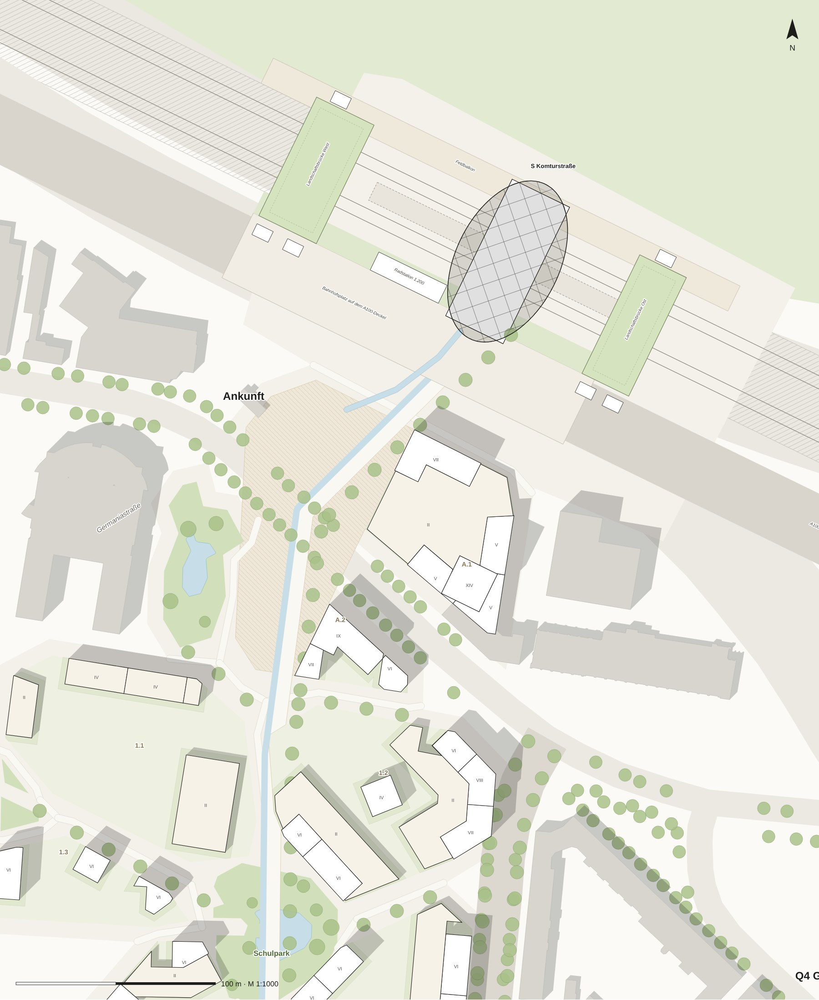
| Baustein | Annahme | Rolle |
|---|---|---|
| Stationsbrücke | 32 × 76 m, Halle unter Holz-Diagrid-Dach 52 × 86 m, First 18 m | Landmarke, nachts Laterne; Treppen, Rolltreppen, 2 Aufzüge |
| Bahnsteig | Mittelbahnsteig 152 × 10 m, −7,5 m | S-Bahn-Vollzug Ring |
| Landschaftsbrücke West | 32 m breit, Spannweite ca. 48 m | Grünachse läuft aufs Tempelhofer Feld |
| Landschaftsbrücke Ost | 26 m breit | Rad und Fuß zum Feld |
| Kioske | 6 Pavillons 9 × 6 m, nur an den Brückenköpfen | Seoullo-Idee im kleinen Maßstab: Kaffee, Blumen, Reparatur |
| A100-Deckel | 190 × 36 m | Bahnhofsplatz, Hangwiese zum Ring |
| Radstation | 1.200 Plätze im Hang | Eingang direkt vom Bahnhofsplatz |
| Feldbalkon | 14 m tiefe Terrasse an der Feldkante | Blick über die Gleise |
| Regendach | Dachwasser fällt als Kaskade auf den Platz | Quelle der Wasserkette bis zum Kanal |
Bahnhofsplatz (Westteil A.1 + Deckel) → Platzteppich über die Germaniastraße (Mischfläche, Tempo 10, durchgehender Belag) → Eingangsplatz (Westteil A.2 + Park). Zusammen ein Ankunftsquartier. Der Ostteil von A.1 ist das Ankunftshaus: Markthalle als Passage vom Bahnhof zur Komturstraße, Hochpunkt 14 G an der Südspitze.
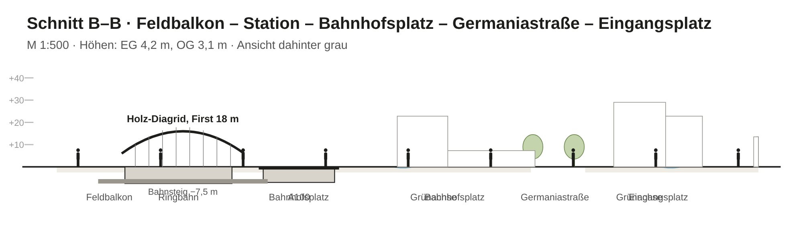
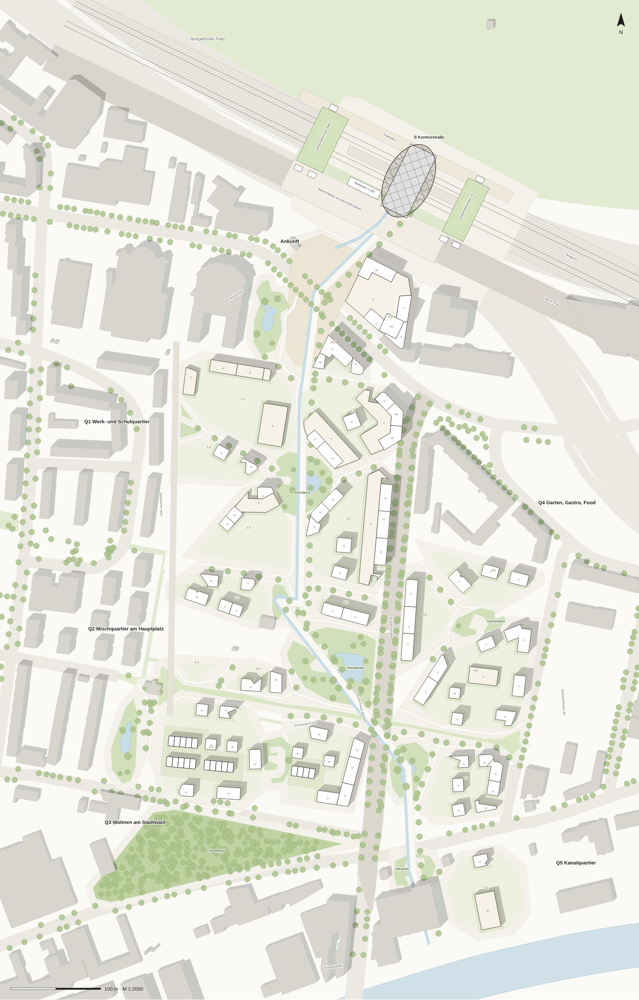
| Quartier | Kante (zu Achse, Platz) | Dahinter | Maße | GRZ / GFZ (A) |
|---|---|---|---|---|
| A Ankunft | 8–9 G Riegel zur Rampe, Torhaus A.2 7–9 G | Markthalle 2 G, Hochpunkt 14 G | Hochpunkt 21 × 21 m, Halle ca. 1.500 m² | 0,93 / 4,7 |
| Q1 Werk + Schule | 6 G, Ecken 8 G, zur Komturstraße und zum Schulpark | Werkhallen 2 G direkt hinter der Kante, Hof in der Mitte; Grundschule 4 G als L, Sporthalle, Kita 2 G | Hallen 15 m tief, Sporthalle 27 × 45 m | 0,37 / 1,39 |
| Q2 Mischquartier | 5 G, Ecken 6 G, zum Hauptplatz | A: Kammfinger 4 G · B: Hausgruppen 3 G um einen Gemeinschaftsgarten | Finger 11 × 20 m, Hausgruppe 12 × 12 m | 0,34 / 1,43 |
| Q3 Wohnen am Wald | offen, 4 G, zur Erholungsachse | Reihenhäuser 3 G, Punkthäuser 4 G am Waldrand | Reihenhaus 6,5 × 11 m, Gruppen à 5, Garten 12 m; Punkthaus 15 × 15 m | 0,27 / 0,96 |
| Q4 Garten, Gastro, Food | 5 G zur Komturstraße und Sachsenhauser Str. | Gartenhalle 2 G mit Gewächshausdach, Food-Lab, Gartenhöfe (Winkel offen nach Süden) | Halle 32 × 18 m, Winkel 30 × 24 m (B: 22 × 18 m, 3 G) | 0,35 / 1,58 |
| Q5 Kanalquartier | 4–5 G zur Teile- und Sachsenhauser Str. | Wasserhaus 3 G am Ufer, Uferpark · B: Uferzeilen 4 G | Wasserhaus 40 × 22 m | 0,27 / 0,99 |
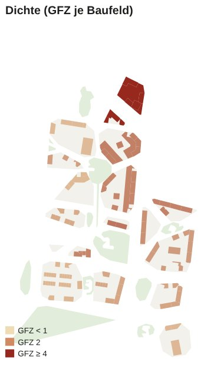
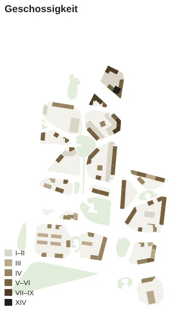
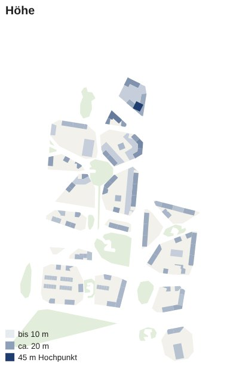
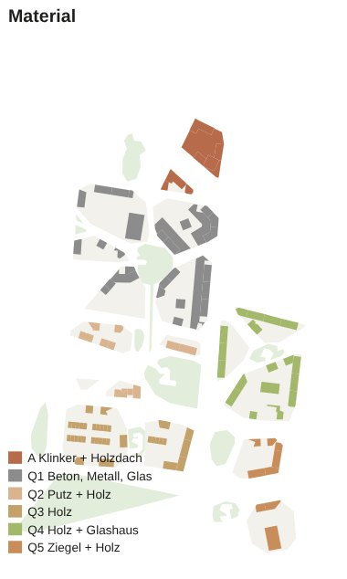
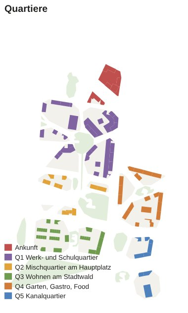
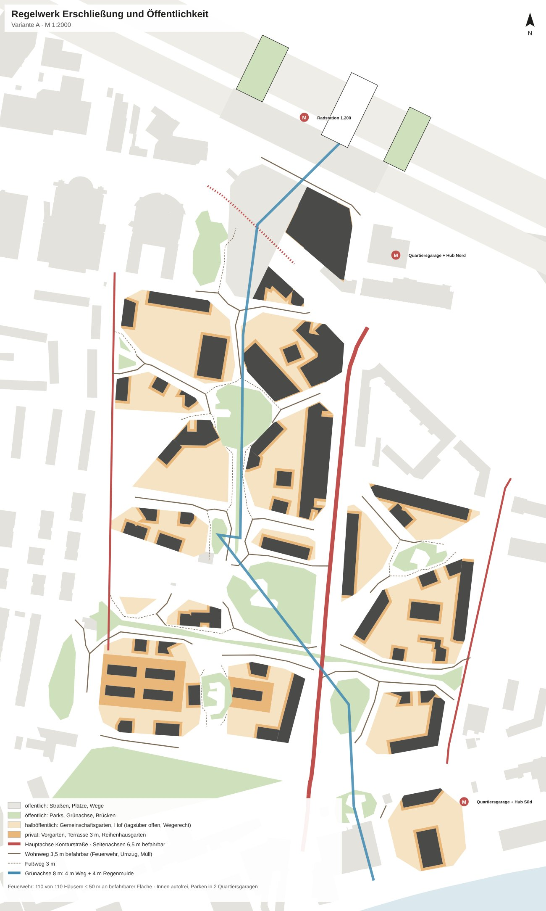
Die öffentliche Kette (Parks + Mulde der Grünachse) ist das Rückgrat vom Bahnhofsdach zum Kanal. Jedes Baufeld hält zusätzlich sein eigenes Wasser, passend zum Quartiersthema. Überlauf geht in die Kette, Notüberlauf in den Kanal.
| Quartier | Retention auf dem Baufeld |
|---|---|
| A Ankunft | Regendach + Kaskade, Gründach auf der Markthalle |
| Q1 | Retentionsdach auf den Werkhallen, Rigole im Werkhof |
| Q2 | Regengarten im Gemeinschaftsgarten |
| Q3 | Mulden-Rigolen am Wohnweg, Versickerung am Waldrand |
| Q4 | Zisternen als Gießwasser für Gärten und Gewächshaus (Food) |
| Q5 | Badeteich am Wasserhaus, Uferrenaturierung |
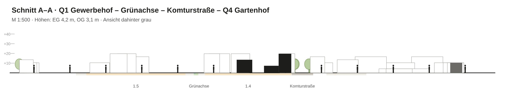
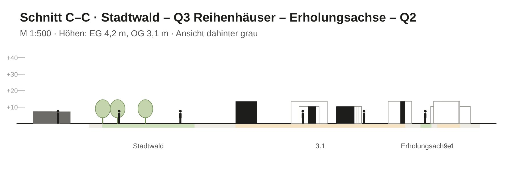
Weißes Arbeitsmodell mit Skizzenlinien. Das Bild in Vectorworks oder Nano Banana laden, den Prompt darunter kopieren und den Stil anpassen. Geometrie und Kamera bleiben gleich.
Dateien im Chat: maßstäbliche Pläne als PDF (1:2000, 1:1000, 1:500), DXF für Vectorworks (lokaler Nullpunkt 391250 / 5813550, Gebäude mit Höhe), 3D als FBX/OBJ + .blend. Der Literatur-Ordner ist noch nicht angekommen.